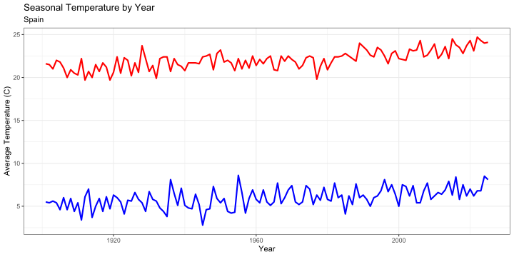
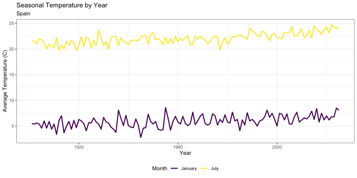

More Data Wrangling
AREC 280 - Harvesting Big Data
University of Maryland
2026-10-15
Today we will
unite)separate)bind_rows and bind_cols)pivot_longer)pivot_wider)We will use the Parquet version of the CRU data in
AGNR-AREC280_Fall2026/Data/CRU/parquet
We will work on a monthly CRU data file
Period values of JAN,FEB, …What do we need to do?
Rows: 438,000
Columns: 7
$ Year <int> 1901, 1902, 1903, 1904, 1905, 1906, 1907, 1908, 1909, 19…
$ Country <chr> "Actaeon_Group", "Actaeon_Group", "Actaeon_Group", "Acta…
$ Variable <chr> "tmp", "tmp", "tmp", "tmp", "tmp", "tmp", "tmp", "tmp", …
$ Period <chr> "JAN", "JAN", "JAN", "JAN", "JAN", "JAN", "JAN", "JAN", …
$ Value <dbl> 26.1, 26.1, 26.2, 26.1, 26.1, 26.1, 26.1, 26.1, 26.1, 26…
$ Country_Clean <chr> "Actaeon Group", "Actaeon Group", "Actaeon Group", "Acta…
$ ISO3 <chr> NA, NA, NA, NA, NA, NA, NA, NA, NA, NA, NA, NA, NA, NA, …Year and Period columnsMonthYear
<month>-<year>"JAN-2005"unite()?Rows: 438,000
Columns: 6
$ MonthYear <chr> "JAN-1901", "JAN-1902", "JAN-1903", "JAN-1904", "JAN-190…
$ Country <chr> "Actaeon_Group", "Actaeon_Group", "Actaeon_Group", "Acta…
$ Variable <chr> "tmp", "tmp", "tmp", "tmp", "tmp", "tmp", "tmp", "tmp", …
$ Value <dbl> 26.1, 26.1, 26.2, 26.1, 26.1, 26.1, 26.1, 26.1, 26.1, 26…
$ Country_Clean <chr> "Actaeon Group", "Actaeon Group", "Actaeon Group", "Acta…
$ ISO3 <chr> NA, NA, NA, NA, NA, NA, NA, NA, NA, NA, NA, NA, NA, NA, …What happened to Period and Year?
unite() removes the original columns it unitedremove=FALSEWhat if we want it back?
Year and Month columns?separate() verb to separate MonthYear
Year and Month columnsMonthYear column# A tibble: 438,000 × 8
MonthYear Month Year Country Variable Value Country_Clean ISO3
<chr> <chr> <chr> <chr> <chr> <dbl> <chr> <chr>
1 JAN-1901 JAN 1901 Actaeon_Group tmp 26.1 Actaeon Group <NA>
2 JAN-1902 JAN 1902 Actaeon_Group tmp 26.1 Actaeon Group <NA>
3 JAN-1903 JAN 1903 Actaeon_Group tmp 26.2 Actaeon Group <NA>
4 JAN-1904 JAN 1904 Actaeon_Group tmp 26.1 Actaeon Group <NA>
5 JAN-1905 JAN 1905 Actaeon_Group tmp 26.1 Actaeon Group <NA>
6 JAN-1906 JAN 1906 Actaeon_Group tmp 26.1 Actaeon Group <NA>
7 JAN-1907 JAN 1907 Actaeon_Group tmp 26.1 Actaeon Group <NA>
8 JAN-1908 JAN 1908 Actaeon_Group tmp 26.1 Actaeon Group <NA>
9 JAN-1909 JAN 1909 Actaeon_Group tmp 26.1 Actaeon Group <NA>
10 JAN-1910 JAN 1910 Actaeon_Group tmp 26.1 Actaeon Group <NA>
# ℹ 437,990 more rowsDo you notice a problem with the new columns?
By default separate creates text (<chr>) columns
Year is numericmutateseparate to attempt to convert columns with convert=TRUELet’s do the latter
Rows: 438,000
Columns: 8
$ MonthYear <chr> "JAN-1901", "JAN-1902", "JAN-1903", "JAN-1904", "JAN-190…
$ Month <chr> "JAN", "JAN", "JAN", "JAN", "JAN", "JAN", "JAN", "JAN", …
$ Year <int> 1901, 1902, 1903, 1904, 1905, 1906, 1907, 1908, 1909, 19…
$ Country <chr> "Actaeon_Group", "Actaeon_Group", "Actaeon_Group", "Acta…
$ Variable <chr> "tmp", "tmp", "tmp", "tmp", "tmp", "tmp", "tmp", "tmp", …
$ Value <dbl> 26.1, 26.1, 26.2, 26.1, 26.1, 26.1, 26.1, 26.1, 26.1, 26…
$ Country_Clean <chr> "Actaeon Group", "Actaeon Group", "Actaeon Group", "Acta…
$ ISO3 <chr> NA, NA, NA, NA, NA, NA, NA, NA, NA, NA, NA, NA, NA, NA, …separate()Separate has a few other important optional arguments
extra="<warn|drop|merge>"
fill="<warn|left|right>"
Think about two data frames that may contain similar information
The tidyverse has several methods of combining data frames
bind_rows() stacks rows of data framesbind_cols() stacks columns of data framesbind_rows() stacks rows of multiple data frames
bind_rows()
NA when a column doesn’t existWatch out for inconsistent data types!
Each column needs a single data type. R will attempt to coerce values of each column to a single data type, but won’t convert numbers to text or vice versa. This can lead to unexpected NA values if you try to stack a column that switches between text and numeric data!
bind_rows()bind_cols() stacks columns of multiple data frames
In general you won’t use bind_rows()
What does it mean to reshape (pivot) data?
pivot_longer()
What does it mean to reshape (pivot) data?
pivot_wider()
gather and spreadpivot_wider()When you use pivot_wider() you should ask yourself three questions:
id_colsnames_fromvalues_fromEach answer tells you what to use for each of the required arguments!
pivot_wider()I would like to create a new version of the CRU data frame
How can I do this?
pivot_wider()id_colsnames_fromvalues_frompivot_wider()id_cols = c(Year,Country)names_from = Periodvalues_from = ValueRemove extra columns before pivoting
When pivot_wider() rearranges your data frame it needs to know what to do with information in each column. This is ambiguous for any column that doesn’t show up in one of the three arguments. You should remove columns that aren’t needed with select() before pivoting.
pivot_wider()Reshape the CRU data to make month columns
id_cols = c(Year,Country)names_from = Monthvalues_from = Valuepivot_wider()cru_tmp |>
# Keep only columns needed for the pivot
select(Year,Country,Month,Value) |>
# Pivot to wider and shorter
pivot_wider(
# Columns that uniquely identify observations
id_cols=c(Country,Year),
# Column used to create names
names_from=Month,
# Column used to fill values
values_from=Value
) -> cru_tmp_wide
glimpse(cru_tmp_wide)Rows: 36,500
Columns: 14
$ Country <chr> "Actaeon_Group", "Actaeon_Group", "Actaeon_Group", "Actaeon_Gr…
$ Year <int> 1901, 1902, 1903, 1904, 1905, 1906, 1907, 1908, 1909, 1910, 19…
$ JAN <dbl> 26.1, 26.1, 26.2, 26.1, 26.1, 26.1, 26.1, 26.1, 26.1, 26.1, 26…
$ FEB <dbl> 26.5, 26.5, 26.5, 26.5, 26.5, 26.5, 26.5, 26.5, 26.5, 26.5, 26…
$ MAR <dbl> 26.5, 26.5, 26.5, 26.5, 26.5, 26.5, 26.5, 26.5, 26.5, 26.5, 26…
$ APR <dbl> 25.9, 25.9, 25.9, 25.9, 25.9, 25.9, 25.9, 25.9, 25.9, 25.9, 25…
$ MAY <dbl> 24.6, 24.6, 24.6, 24.6, 24.6, 24.6, 24.6, 24.6, 24.6, 24.6, 24…
$ JUN <dbl> 23.5, 23.5, 23.5, 23.5, 23.5, 23.5, 23.5, 23.5, 23.5, 23.5, 23…
$ JUL <dbl> 22.9, 22.9, 22.9, 22.9, 22.9, 22.9, 22.9, 22.9, 22.9, 22.9, 22…
$ AUG <dbl> 22.6, 22.5, 22.6, 22.5, 22.5, 22.5, 22.5, 22.5, 22.5, 22.5, 22…
$ SEP <dbl> 22.8, 22.8, 22.8, 22.8, 22.8, 22.8, 22.8, 22.8, 22.8, 22.8, 22…
$ OCT <dbl> 23.5, 23.5, 23.5, 23.4, 23.5, 23.5, 23.5, 23.5, 23.5, 23.5, 23…
$ NOV <dbl> 24.4, 24.4, 24.4, 24.4, 24.4, 24.4, 24.4, 24.4, 24.4, 24.4, 24…
$ DEC <dbl> 25.2, 25.3, 25.2, 25.2, 25.2, 25.2, 25.2, 25.2, 25.2, 25.2, 25…pivot_wider()Using the pivoted data
Year on the horizontal axis# Filter to one country
cru_tmp_wide |>
filter(Country == "Spain") -> cru_spain
ggplot(cru_spain,aes(x=Year)) +
geom_line(aes(y=JAN),color="blue",linewidth=1) +
geom_line(aes(y=JUL),color="red",linewidth=1) +
theme_bw() +
labs(
x="Year",
y="Average Temperature (C)",
title="Seasonal Temperature by Year",
subtitle="Spain"
)
The visualization doesn’t contain a legend
color aestheticYou can add a manual legend by
color aesthetic to each layercolor aesthetic value to the label text you want in the legend# Filter to one country
cru_tmp_wide |>
filter(Country == "Spain") -> cru_spain
ggplot(cru_spain,aes(x=Year)) +
# Add the legend text as the color aesthetic
geom_line(aes(y=JAN,color="January"),linewidth=1) +
geom_line(aes(y=JUL,color="July"),linewidth=1) +
theme_bw() +
labs(
x="Year",
y="Average Temperature (C)",
title="Seasonal Temperature by Year",
subtitle="Spain",
color="Month"
) +
# Discrete Viridis Scale
scale_color_viridis_d() +
theme(legend.position = "bottom")
pivot_longerpivot_longer will make your data longer and narrower
pivot_widerpivot_longer QuestionsWhenever you use pivot_longer ask yourself the following questions
colsnames_tovalues_topivot_longerUse pivot_longer on the wide dataframe we created earlier to undo the previous pivot_wider
Specifying columns in pivot_longer
The cols argument may consist of many columns. In this example it’s all 12 month names. You can use the tidy-select syntax to save yourself typing.
You want to pivot everything except Year and Country so you could use
cols=-c(Year,Country)
Alternatively, the month names are 3 capital letters and you can match each with a Regular Expression and the matches tidy-select function
cols=matches("^[A-Z]{3}$")
pivot_longerpivot_longer to transform the data framepivot_longer# A tibble: 438,000 × 4
Country Year Month Value
<chr> <int> <chr> <dbl>
1 Actaeon_Group 1901 JAN 26.1
2 Actaeon_Group 1901 FEB 26.5
3 Actaeon_Group 1901 MAR 26.5
4 Actaeon_Group 1901 APR 25.9
5 Actaeon_Group 1901 MAY 24.6
6 Actaeon_Group 1901 JUN 23.5
7 Actaeon_Group 1901 JUL 22.9
8 Actaeon_Group 1901 AUG 22.6
9 Actaeon_Group 1901 SEP 22.8
10 Actaeon_Group 1901 OCT 23.5
# ℹ 437,990 more rows